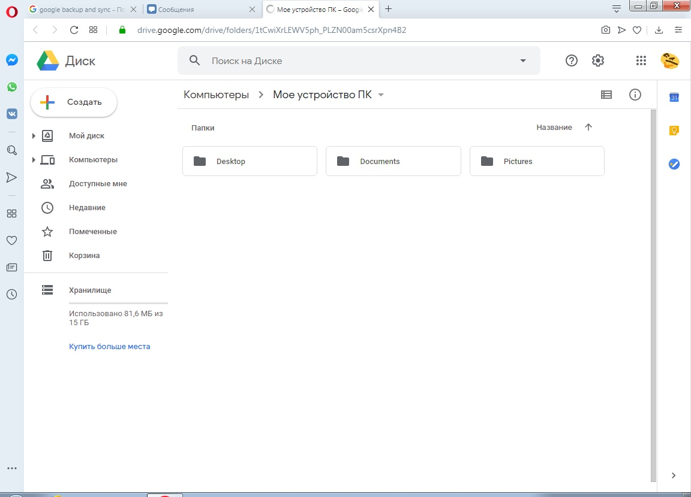

Средства резервного копирования и восстановления данных
Работа с любыми данными всегда связана с потенциальной возможностью их потери. Данные могут быть потеряны в результате различных факторов: человеческих ошибок (как пользователей, так администраторов сети), физической кражи, в результате деструктивных действий вредоносных программ, поломки устройств хранения данных. Если были потеряны личные данные (например, архив с фотографиями), то ущерб является субъективным и будет выражаться в негативных эмоциях пользователя. А, в случае потери служебной информации, ущерб может проявиться в экономической сфере - в финансовых убытках, потери конкурентных преимуществ, срывах или невыполнении контрактов и даже разорении организации. Для защиты от потери информации используются системы резервного копирования и восстановления данных (Backup & Recovery). Система резервного копирования и восстановления данных - это программный или программно-аппаратный комплекс для создания копий данных с определенной периодичностью для их последующего восстановления. Помимо защиты от потери данных системы резервного копирования также позволяют обеспечить организовать непрерывность работы сотрудников за счет быстрого восстановления операционной системы (при наличии ее образа) или восстановления данных на другом компьютере.
EaseUS Todo Backup Free
EASEUS Todo Backup - бесплатный инструмент для резервного копирования не только отдельных разделов и всего диска целиком, но и выбранных пользователем папок и файлов. С помощью программы можно без особых трудностей выполнить посекторное копирование диска/раздела (с возможностью записи полученного образа на CD/DVD диск, сохранения на внешних носителях или загрузки на FTP сервер), производить резервное копирование по расписанию, а также за пару кликов мыши осуществлять миграцию или клонирование диска для переноса данных на другой диск.
Работа программы:
стартовый экран
На стартовом экране можно выбрать, что мы хотим скопировать.
Выбор места расположения копии
Процесс копирования
Завершение копирования
Результат
Вывод: Программа очень проста в освоении и поэтому может подойти любому пользователю.
Paragon Backup & Recovery
PARAGON Backup & Recovery Мощный инструмент, предназначенный для резервного копирования и восстановления данных на компьютерах под управлением Windows. Кроме этого, в программе есть еще целый набор не менее полезных инструментов для работы с разделами и дисками.
Прежде всего, можно выполнять резервное копирование важных данных. Программа способна делать полный бэкап всей информации на диске, включая структуру системы. Таким образом, она позволяет создать резервную копию системного диска/раздела, который можно развернуть на новом диске или на старом после форматирования и получить сразу готовую систему со всеми программами и настройками.
Кроме этого, программа может делать инкрементальный бэкап данных, сохраняя только изменения, сделанные после последнего полного бэкапа.
Еще одна интересная функция данной программы - это создание капсул для резервных копий. Такая капсула (Backup Capsule) представляет собой самостоятельный раздел на жестком диске, в котором хранится вся информация. В случае повреждения или форматирования основного раздела диска, эта капсула остается невредимой, как и вся информация в ней. Во избежание случайного удаления или несанкционированного доступа к капсуле, она скрыта и не отображается в Windows.
Работа программы:

Стартовый экран
Выбор копируемого объекта
Выбор места хранения копии
Процесс копирования
Завершение копирования
Результат
Вывод: Программа позволяет легко и быстро скопировать и сохранить все нужные файлы.
Google Backup and Sync
Хранению подлежат ваши системные файлы и папки, а также информация пользователя, к примеру, фото. В качестве места сохранения информации используется ваша учетная запись в Google Диск.
Конечно, это накладывает определенные ограничения на объем сохраненной информации, однако пользователю не нужно искать флешку и держать ее под рукой: достаточно доступа в Интернет и данные будут восстановлены так быстро, насколько позволит ваше соединение с сетью.
Работа программы:
Авторизация
Для работы с программой необходимо зарегистрироваться в google.
Выбор копируемых файлов
Синхронизация
Программа может синхронизировать ПК с системой google диск.
Процесс копирования

Результат
Вывод: Очень простая программа, позволяющая загрузить резервную копию сразу в облако.
Итог: Все программы схожи по функционалу, но если требуется загрузить копию в интернет, то лучше всего подойдет Google Backup and Sync.